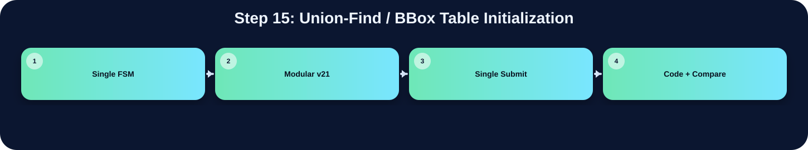

初始化 CCL 與 bbox 相關資料表。

此表把本流程在三個版本中的 state/module 與 code 關係整理出來；沒有明確對應者保持空白。
| 版本 | 對應 state / module | 和 code 的關係 |
|---|---|---|
| Single FSM | S_PARENT_INIT | 初始化 parent[]、bbox_valid[]、bbox_border[]、bbox_xmin/xmax/ymin/ymax[] |
| Modular v21 | ||
| Single Submit |
在「Union-Find / BBox Table Initialization」流程中，並非三個版本都有獨立而明確的程式段落。Single FSM 版有明確對應，主要在 S_PARENT_INIT 完成，說明為：初始化 parent[]、bbox_valid[]、bbox_border[]、bbox_xmin/xmax/ymin/ymax[]。Modular v21 版沒有明確獨立此流程，可能由子模組內部合併處理，或該架構不採用此額外階段。Single Submit 版沒有明確獨立此流程，對應原始碼區塊依需求保持空白。這種差異通常來自架構選擇：單一 FSM 會把多個小步驟合併在同一段 state；模組化版本則傾向把功能交給特定子模組；single_submit 則在單檔中保留 module-level 階段。
下方採用下拉式區塊顯示。中文說明放在程式碼上方；原始程式碼本身沒有修改、沒有插入註解。若某份檔案沒有明確對應流程，該程式碼區塊保持空白。
S_PARENT_INIT: begin
// V16 critical fix:
// Fully initialize union-find and bbox tables before every pattern.
// Without this, stale bbox_valid/bbox_border values can draw false green boxes,
// especially when P1~P4 are simulated sequentially.
parent[label_idx] <= label_idx;
bbox_valid[label_idx] <= 1'b0;
bbox_border[label_idx] <= 1'b0;
bbox_xmin[label_idx] <= 8'd255;
bbox_xmax[label_idx] <= 8'd0;
bbox_ymin[label_idx] <= 8'd255;
bbox_ymax[label_idx] <= 8'd0;
if (label_idx < 9'd256)
row_label[label_idx[7:0]] <= 9'd0;
if (label_idx==MAX_LABEL_IDX) begin
addr_cnt<=16'd0;
label_idx<=9'd0;
next_label<=9'd1;
left_label<=9'd0;
nw_label_hold<=9'd0;
lb_seq<=2'd0; lb_col<=8'd0; lb_phase<=2'd0;
lb_prev_sel<=2'd0; lb_curr_sel<=2'd1; lb_next_sel<=2'd2;
state<=S_LB_INIT2;
end else begin
label_idx<=label_idx+9'd1;
end
end
// -----------------------------------------------
// S_LB_INIT2：重新載入 line buffer for CCL
// 邏輯與 S_LB_INIT 完全相同，完成後進 S_CCL_SCAN
// -----------------------------------------------